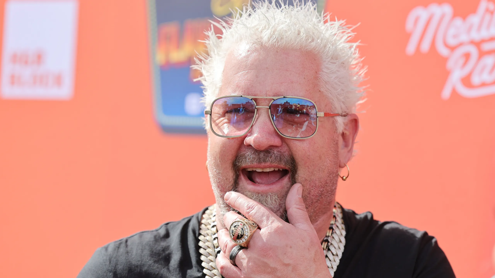

Welcome to DJA Food Truck, where we specialize in crafting mouthwatering burgers, flavorful tacos, and delicious sides that elevate your street
food experience. Our vision is to deliver savory satisfaction on every plate and create moments of culinary delight that you'll remember long
after the last bite. Dive into our gourmet burgers, made with premium ingredients and served with a side of crispy, golden fries that are
impossible to resist. Our tacos are a fusion of bold flavors and fresh fillings, from classic favorites to innovative combinations that keep
your taste buds excited. Pair your meal with a selection of wholesome sides, including roasted vegetables bursting with natural goodness. At
DJA Food Truck, we're not just about serving food; we're about curating an unforgettable dining adventure that brings people together over
the love of great food. Join us and savor the flavor at every stop!

"Flavor town has a new stop @ Appleton WI, and it's DJA's Food Truck! This place is on fire with sizzling burgers, taco twists, and fries that'll make you wanna shout 'Flavortastic!'
Don't just take my word for it, come taste the awesomeness at DJA's!" - Guy Fieri / Los Angles, CA
"Sonny from the Best Food Review Show here, and let me tell ya, DJA's Food Truck is the real deal! We're talking flavor explosions that'll have your taste buds doing backflips. From mouthwatering burgers to taco creations that'll make you say 'Holy Guacamole!' And those fries? Crispy perfection! DJA's Food Truck is a must-stop for foodies everywhere. You don't wanna miss this food truck magic!"